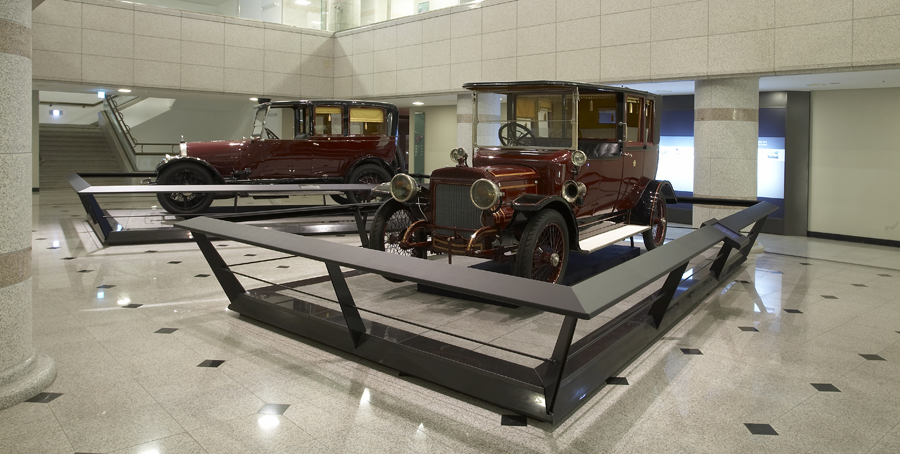
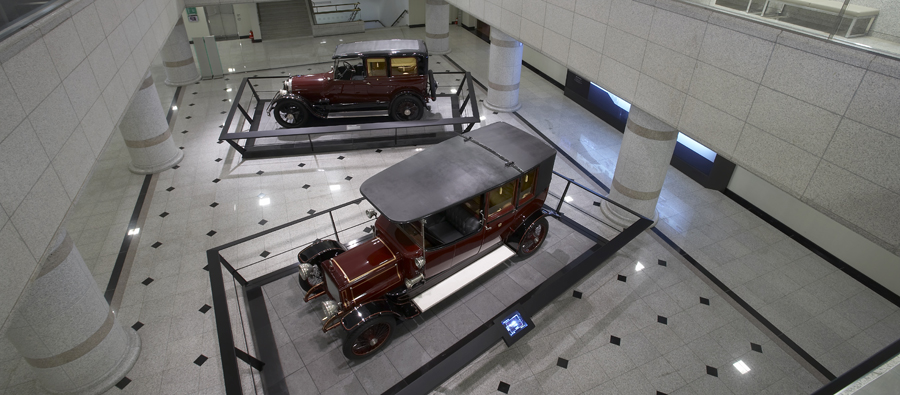

일정안내
일정안내어차
National Palace Museum of Korea Home > 전시안내 > 상설전시 > 7 어차
7 어차
고종은 독립국가로서의 위상을 대내외에 알리기 위해 국호를 ‘대한제국’이라 정하고, 황제즉위식을 거행하였다. 대한제국 선포와 함께 사회 전반에서 근대화 작업이 이뤄졌고, 미국 · 유럽 · 일본을 통해 신기술과 문화가 유입되었다. 대한제국 황실 가족의 생활도 근대적으로 변화하였으며, 전통적 이동 수단 대신 자동차를 사용하기 시작하였다. 현재 국립고궁박물관에는 1910년대에 사용되었던 황제와 황후의 어차가 전시되고 있으며, 각종 문물과 제도를 새롭게 정비했던 황실의 생활상을 엿볼 수 있다.
7 어차 - 대표유물
순종황제(재위 1907~1910년)가 탔던 어차로 미국의 지엠GM 사가 제작한 캐딜락 리무진이다. 차체는 철제가 아닌 목재이고 외부는 칠漆로 도장하였다. 차문에는 대한제국 황실의 문장인 황금색 오얏꽃 장식을 붙였다. 전체적인 형태가 마차와 비슷한 모습을 하고 있어 초기 자동차 모델의 특징을 보여준다. 전 세계적으로 20대만 남아 있다.
순종의 황후인 순정효황후(1894~1966년)가 탔던 어차로 영국의 다임러DAIMLER 사가 제작한 리무진이다. 순종황제 어차와 같이 차체는 목재이고 외부는 칠漆로 도장하였다. 차문에는 대한제국 황실의 문장인 황금색 오얏꽃 장식을 붙였다. 전 세계적으로 3대만 남아 있고 국내에 현존하는 가장 오래된 자동차로 순종황제 어차와 함께 자동차 발달사는 물론 황실의 생활상 등을 연구하는 데 중요한 역사자료이다.
7 어차 - 전시공간


담당부서: 전시홍보과
담 당 자: 김재은
전화번호: 02‐3701‐7633